9 Cloud Analytics with AWS
This chapter adapts the AD688 Module 0 cloud workflow into a reusable teaching pattern. The goal is not to turn every course into an AWS course. The goal is to give students a predictable way to work in a remote Linux environment, keep their work under version control, and produce reproducible Quarto deliverables.
Use this chapter when a course needs students to work with tools that are hard to install locally, require more compute than a laptop can provide, or benefit from a shared cloud environment.
9.1 The cloud as the course build room
In a Quarto course, the local repository is the source of truth. The cloud environment is the shared build room: a consistent place where students can run the same tools, execute the same code, render the same documents, and push the result back to GitHub.
This mirrors the larger Quarto publishing logic:
- source files stay in GitHub
- code and outputs stay connected
- the environment is documented and repeatable
- rendered materials are checked before submission or publication
- the workflow can be rebuilt by another student, instructor, or future version of the course
AWS is useful here because it gives students a common Linux machine. But the pedagogical point is broader than AWS: do not let the environment become an invisible, personal setup that only works once. Treat it as part of the course publishing system.
9.2 Why Add a Cloud Workflow?
A cloud workflow is useful when students need to:
- run Linux commands consistently across Windows, macOS, and Linux laptops
- use the same Python, Jupyter, Quarto, or Spark environment
- practice SSH and remote development
- protect course work by pushing to GitHub frequently
- learn the connection between local tools, cloud compute, and published outputs
For instructors, the cloud environment becomes a common baseline. When students say “it works on my machine,” the course has a shared machine to compare against.
9.3 The Operating Model
The AD688-style pattern connects four pieces:
flowchart LR
A["GitHub repository"] --> B["Local editor"]
B --> C["AWS EC2 instance"]
C --> D["Jupyter or shell work"]
D --> E["Quarto deliverable"]
E --> AStudents begin with a GitHub repository, connect to a cloud machine, do their work in a controlled environment, render or prepare the deliverable, and push the result back to GitHub.

9.4 Instructor Setup Checklist
Before assigning a cloud lab, confirm the pieces students will need.
For AWS Academy Learner Lab courses, students should also read the learner lab guide and complete any required security or compliance modules before launching resources.
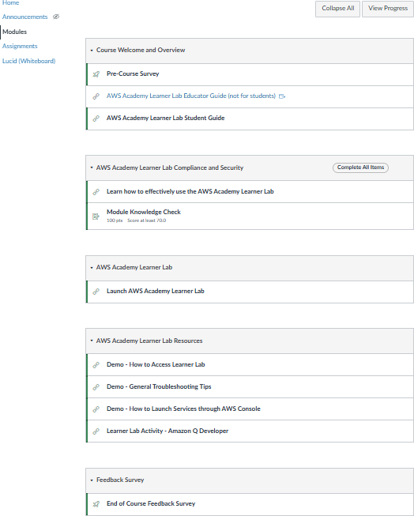
9.5 Student Workflow
The student-facing sequence should stay short and repeatable.
- Accept the AWS Academy or course cloud invitation.
- Start the lab environment.
- Launch an EC2 instance using the course-approved settings.
- Download or locate the SSH private key.
- Connect from VS Code Remote-SSH or a terminal.
- Install or verify the required software.
- Clone the assignment repository from GitHub.
- Work in the repository.
- Commit and push often.
- Submit the required link or artifact.
This structure matters because cloud sessions can stop, instances can be restarted, and budgets can expire. GitHub is the durable record of student work.
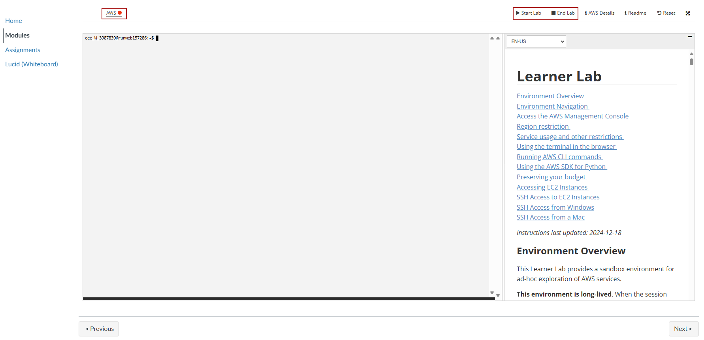
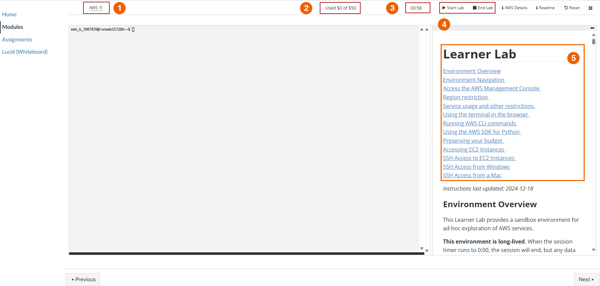
9.6 EC2 Launch Decisions
Give students exact choices instead of asking them to interpret the AWS console from scratch.
| Decision | Course Guidance |
|---|---|
| Instance name | Use a predictable course name, such as ad688-lab01 |
| Operating system | Use the course-approved Linux image |
| Instance type | Use the smallest approved type that supports the assignment |
| Key pair | Use the course-provided key pair or the required generated key |
| Network access | Allow only the ports required by the assignment |
| Storage | Use the course-approved size and avoid unnecessary volumes |
| Region or subnet | Keep all course resources in the same approved location |
When students are new to cloud computing, the most important lesson is not “click every option.” It is “change only the settings the course asks you to change.”
9.6.1 Visual EC2 Launch Path
The AD688 lab uses a very explicit launch sequence. The screenshots below show the path students should recognize before they work independently.
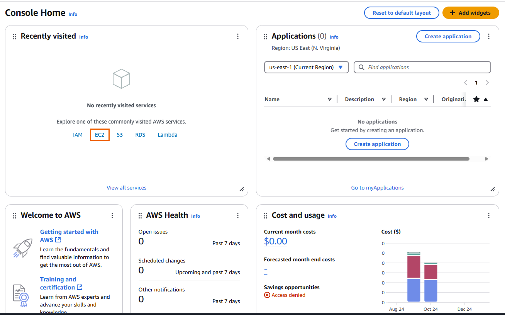
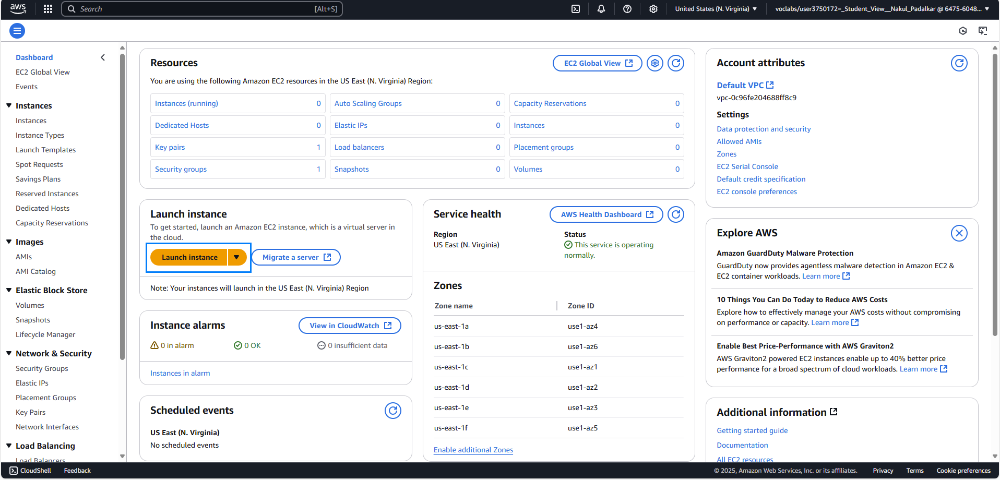
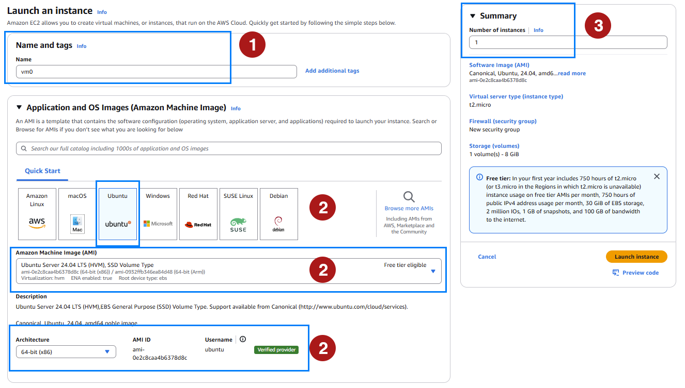
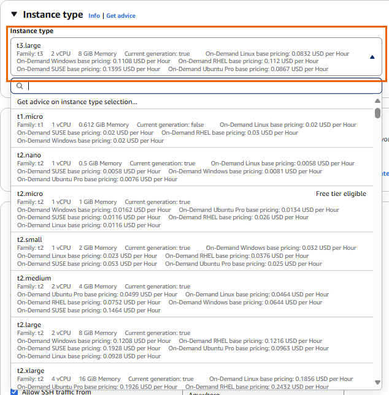
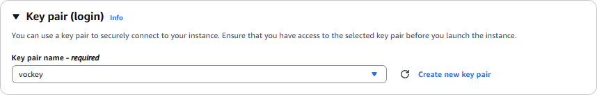
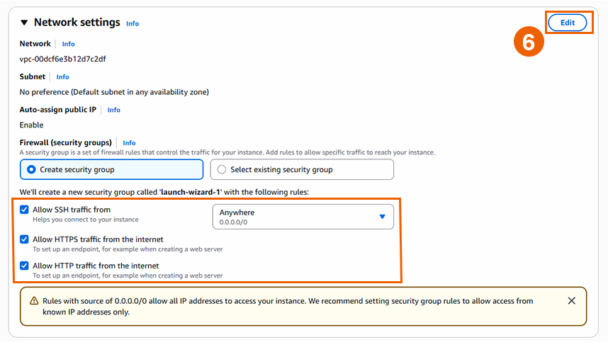
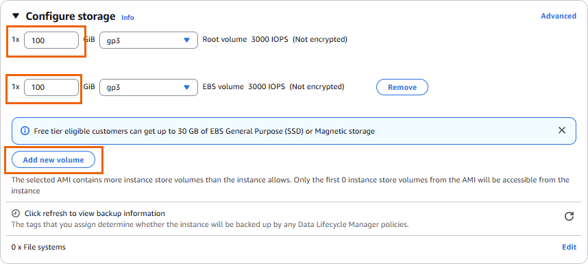
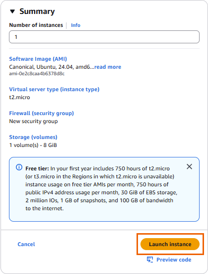
9.7 SSH Key Handling
SSH keys deserve their own emphasis because mistakes here are common and risky.
Students should keep private keys:
- out of GitHub
- out of OneDrive, Google Drive, Dropbox, and other synced folders
- in a local
.sshfolder or a course-specific secure folder - readable only by the user account that needs the key
On macOS, Linux, or WSL:
mv ~/Downloads/labsuser.pem ~/.ssh/vockey.pem
chmod 400 ~/.ssh/vockey.pemThen connect with:
ssh -i ~/.ssh/vockey.pem ubuntu@PUBLIC_DNS_OR_IPOn Windows PowerShell, OpenSSH can also be used, but permissions sometimes need extra care:
icacls vockey.pem /inheritance:r
icacls vockey.pem /grant "$env:USERNAME:R"
ssh -i .\vockey.pem ubuntu@PUBLIC_DNS_OR_IPFor Windows students who are comfortable with Linux commands, WSL usually gives the smoothest SSH experience.
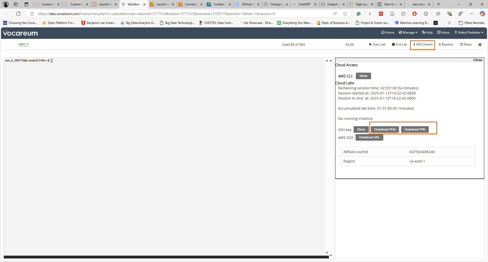
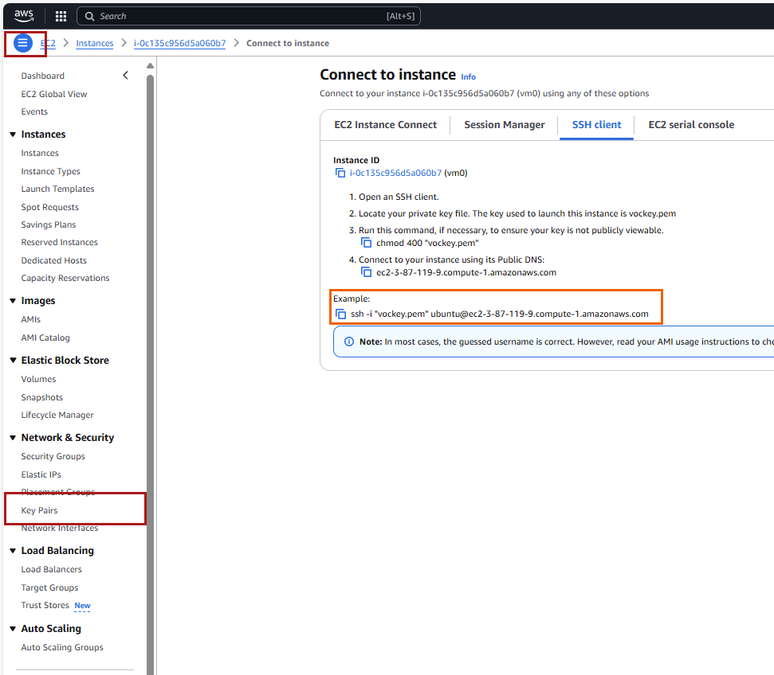
9.8 VS Code Remote-SSH
VS Code Remote-SSH gives students a familiar editor while running commands and code on the EC2 instance.
Recommended extensions:
- Remote - SSH
- Python
- Jupyter
- Quarto
- GitHub Pull Requests or GitHub integration tools
A simple SSH config entry looks like this:
Host course-ec2
HostName PUBLIC_DNS_OR_IP
User ubuntu
IdentityFile ~/.ssh/vockey.pemAfter this is saved, students can connect to course-ec2 from the Remote Explorer. Once connected, the terminal, file browser, Python interpreter, and Quarto commands run on the remote machine.
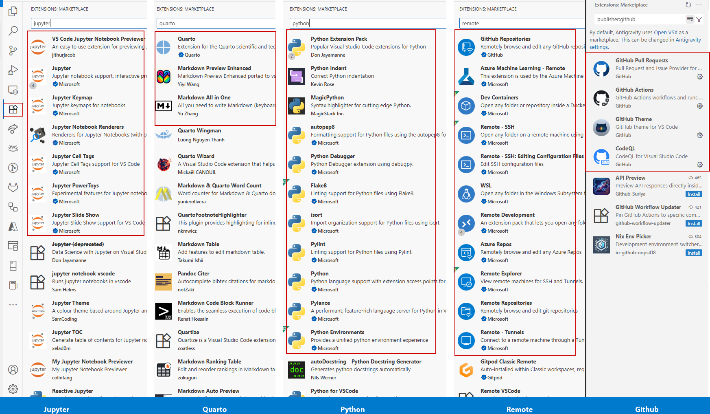
9.9 Software Baseline
For an analytics course, the remote machine usually needs:
- system package updates
- Git
- Python and
pip - virtual environment support
- Jupyter
- Quarto
- any course-specific libraries
A minimal Ubuntu setup is:
sudo apt update
sudo apt install -y git python3 python3-pip python3-venv
python3 -m venv .venv
source .venv/bin/activate
python -m pip install --upgrade pip
python -m pip install jupyter pandas matplotlibThen verify:
git --version
python --version
jupyter --version
quarto --versionIf Quarto is not preinstalled, give students one course-approved installation method. Avoid asking beginners to mix package managers unless there is a clear reason.
9.10 Working With GitHub From EC2
Students should clone their repository on the EC2 instance and push changes from there:
git clone https://github.com/YOUR-USERNAME/YOUR-REPOSITORY.git
cd YOUR-REPOSITORY
git statusDuring work:
git status
git add .
git commit -m "Complete cloud environment setup"
git pushIf students use SSH remotes, their GitHub SSH key must be available on the EC2 instance. For many beginner labs, HTTPS authentication or GitHub CLI authentication is simpler to support.
9.11 Running Jupyter Safely
When Jupyter is needed on EC2, prefer SSH port forwarding over opening broad public access.
From the local machine:
ssh -i ~/.ssh/vockey.pem -L 8000:localhost:8888 ubuntu@PUBLIC_DNS_OR_IPOn the EC2 instance:
jupyter notebook --no-browser --ip=127.0.0.1 --port=8888Then open the forwarded local URL in the browser. This keeps the notebook server bound to the remote machine and accessed through the SSH tunnel.
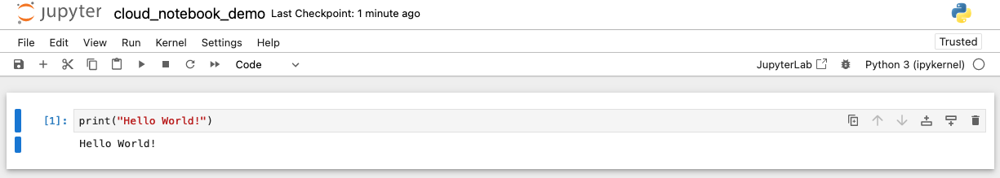
9.12 Using Quarto on EC2
Quarto fits naturally into the cloud workflow because the same source file can be edited remotely and rendered into a report, website, or slide deck.
The cloud machine should never become the only place where the work exists. It is where students build, test, and render; GitHub is where the course source and student submissions persist.
Inside the repository:
quarto preview
quarto render
git status
git add .
git commit -m "Render Quarto deliverable"
git pushIf a document depends on code execution, students should render it on the same environment where the required packages and data are available. This avoids the classic problem where a report renders locally but fails in the cloud, or the reverse.
For cloud-based Quarto assignments, ask students to submit evidence that connects all three layers:
- the GitHub repository URL
- the rendered Quarto output
- a short note describing the EC2 environment used to render it
9.13 File Transfer
Most student work should move through GitHub. For one-off files, use scp from the local machine to copy a file from EC2:
scp -i ~/.ssh/vockey.pem ubuntu@PUBLIC_DNS_OR_IP:/home/ubuntu/path/to/file .Students should run this from their own computer. Running scp from EC2 back to a laptop usually fails because the laptop is behind a home, campus, or public network that is not directly addressable.
9.14 Budget and Shutdown Habits
Cloud labs add a professional responsibility: students must manage resources.
Recommended course policy:
- check the lab budget before and after each work session
- stop instances when finished
- do not create extra resources unless the assignment requires them
- push to GitHub before ending a session
- never store secrets, private keys, access tokens, or passwords in the repository
For AWS Academy environments, remind students that budget displays can lag behind actual usage. The safe habit is to stop early, push often, and avoid unnecessary resources.
9.15 Cloud Lab Template
Use this structure when writing a cloud lab.
# Lab Title
## Goal
What students will be able to do by the end.
## Required Environment
AWS Academy Learner Lab, EC2, VS Code Remote-SSH, GitHub repository.
## Setup
Start the lab, launch EC2, connect by SSH, clone the repository.
## Tasks
1. Verify the operating system and tools.
2. Install or activate the course environment.
3. Complete the analysis or build task.
4. Render the Quarto deliverable.
5. Commit and push.
## Deliverables
Repository URL, rendered HTML/PDF, command output, and reflection.
## Shutdown
Push work, stop the instance, confirm budget.9.16 Completion Checklist
9.17 Instructor Notes
Start with one small cloud lab before using cloud infrastructure for a major assignment. The first lab should focus on access, SSH, GitHub, and rendering a tiny Quarto file. Once that workflow is reliable, later labs can focus on the analytics content instead of environment repair.
The best cloud assignment is boring at the infrastructure layer: students know where to click, where to type, where to save, and where to submit. That lets the course spend its energy on analysis, interpretation, and communication.